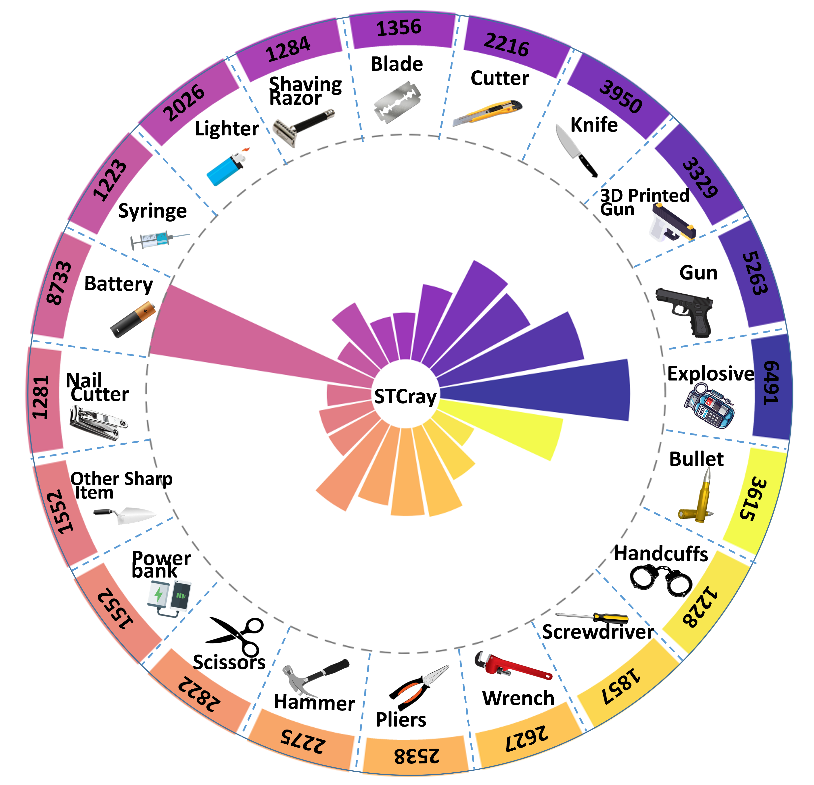
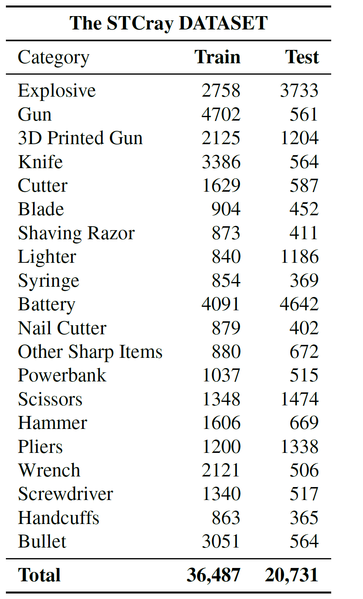

Khalifa University of Science and Technology Abu Dhabi University
University of Bonn Lamarr Institute for ML and AI The University of Western Australia
STING-BEE is the first domain-aware visual AI assistant for X-ray baggage security screening, trained using our STCray dataset, the first multimodal X-ray baggage security dataset with 46,642 image-caption paired scans spanning 21 categories, including novel threat categories such as
Improvised Explosive Devices (IEDs) and 3D-printed firearms. STING-BEE provides a unified platform for scene comprehension, referring threat localization, visual grounding, and VQA, establishing new baselines for X-ray baggage security research.
🏆 Contributions
STCray Dataset - The first multimodal X-ray security dataset with 46,642 image-caption pairs.
STING Protocol - A structured approach ensuring realistic threat concealment by systematically varying threat placement and occlusion.
STING-BEE - The first domain-aware VLM for X-ray baggage security screening.
It establishes new baselines for multimodal learning in X-ray baggage security.
📌 STCray Dataset
STCray is the first multimodal X-ray baggage security dataset, featuring 46,642 image-caption paired scans spanning 21 threat categories.
It includes real-world threat concealment scenarios, ensuring diverse and representative data for X-ray security AI research.
The dataset features a wide spectrum of threat categories, ranging from sharp metallic threats to flammable materials, including Explosive, Gun, 3D-printed Gun, Knife, Cutter, Blade, Shaving Razor, Lighter, Syringe, Battery,
Nail Cutter, Other Sharp Item, Powerbank, Scissors, Hammer, Pliers, Wrench, Screwdriver, Handcuffs, and Bullet. Unlike existing datasets that fail to capture real-world threats adequately,
STCray emphasizes sophisticated prohibited items, such as IEDs and 3D-printed firearms, alongside realistic concealment scenarios that mimic smuggling tactics.
Statistical Distribution
STCray dataset is comprehensively annotated, featuring 46,642 samples with detailed descriptions, bounding boxes, and pixel-level labels.
The dataset comprises 30,044 training and 16,598 test images. It includes 57,218 threat instances across 20 threat categories.

Instance-wise threat distribution in STCray.

Train-Test summary in STCray dataset.
Figure shows instance-wise distribution of threat categories in the STCray dataset. Left: Radial plot depicting overall counts;
Right: Table summary across train and test sets. STCray contains 36,438 single-threat images and 9,255 scans with multiple threats.
📌 STING Protocol
STING (Strategic Threat Concealing) Protocol is a structured approach designed to systematically vary the position, orientation, and concealment of threat objects in X-ray baggage scans.
This protocol ensures a **diverse and realistic dataset**, simulating real-world smuggling tactics used in aviation security.
×
The STING protocol underpins the STCray dataset, categorizing clutter into four levels—Limited, Medium, Heavy, and
Extreme—progressively increasing occlusions and distractions. Concealment sublevels further diversify scenarios, ranging from
low-density (e.g., organic items like books) to extreme configurations such as metallic grids and multi-layered superimposed materials.
These concealments are further diversified by systematically varying the position and orientation of the threat, distorting threat appearances.
Caption Generation Pipeline
The caption generation process leverages prior knowledge of threat-specific metadata and synonym sets to dynamically construct captions
for each baggage scan collected using the STING Protocol. The matadata includes the baggage type, threat category, threat location and pose
(e.g., corner flat), followed by levels of concealment and clutter, and additional normal items.
×
📌 STING-BEE: Training and Evaluation Pipeline
×
We train STING-BEE in a multi-stage process to build domain expertise and grounding capabilities. For training STING-BEE for X-ray security screening, we created an instruction-following
dataset by creating question-answer pairs for scans in our STCray dataset. These question-answer pairs follow structured templates specific to the language-based vision tasks.
STING-BEE introduces specialized task-identification tokens to differentiate between diverse vision-language tasks demanding different levels of spatial awareness.
📌 Results
Qualitative examples below showcasing the capabilities of STING-BEE across multiple vision-language tasks, including Scene Comprehension, Referring Threat Localization, Visual Grounding, and Visual Question Answering (VQA).
The examples span **four X-ray security datasets**— STCray, SIXray, PIDray, and Compass XP, demonstrating STING-BEE’s cross-domain generalization despite scanner variations.
Qualitative examples showcasing the capabilities of STING-BEE across diverse vision-language tasks:
Scene Comprehension (d, e, f, i), Referring Threat Localization (a, j), Visual Grounding (c, g), and Visual Question Answering (b, h).
These examples span four X-ray security datasets— STCray, SIXray, PIDray, and Compass XP — illustrating STING-BEE’s robustness and adaptability to diverse X-ray imagery.
×
Scene Comprehension
The images display diverse objects such as guns, pliers, wrenches, power banks, scissors, and
hammers across different scenarios, highlighting the robustness of STING-BEE in understanding and categorizing threat items within X-ray imagery.
×
Visual Grounding
Visual grounding qualitative examples demonstrating STING-BEE’s ability to
describe and localize specific threat items in X-ray baggage scans. The system effectively identifies and highlights objects such as guns, handcuffs, and bullets within diverse scenarios.
×
Referral Threat Localization
Referral threat localization examples showcasing STING-BEE’s precision in identifying and localizing specific threat items in X-ray baggage scans.
The system demonstrates its capability to locate different contraband objects, utilizing bounding box coordinates to highlight their positions within the scans.
×
Visual Question Answering
Qualitative examples showcasing the capabilities of STING-BEE in Visual Question Answering (VQA) across diverse question types:
(a) Instance Identification, Instance Counting, and Misleading Question resolution, (b) Instance Location and Instance Attribute recognition, and
(c) Instance Interaction and Complex Visual Reasoning.
×
Citation
If you use the findings of this research in your work, please cite our paper:
@article{velayudhan2025stingbee,
title={STING-BEE: Towards Vision-Language Model for Real-World X-ray Baggage Security Inspection},
author={Divya Velayudhan, Abdelfatah Ahmed, Mohamad Alansari, Neha Gour, Abderaouf Behouch, Taimur Hassan, Syed Talal Wasim, Nabil Maalej, Muzammal Naseer, Juergen Gall, Mohammed Bennamoun, Ernesto Damiani, Naoufel Werghi},
booktitle={Proceedings of the IEEE/CVF Conference on Computer Vision and Pattern Recognition (CVPR)},
year={2025}
}
Contact
For any inquiries regarding STING-BEE, please feel free to contact
Divya Velayudhan at
divya.velayudhan@ku.ac.ae